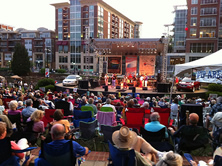

HD Street band to play out of state
HD Street Band will play 3 concerts in Redville AK during the Summer sounds festival, Redville’s 12-week summer music festival.
This is a huge event for our bansd as we have been selected to play for the Summer sounds festival in Redville Arkansas. Our band has been selected for 3 concerts to be performed on July 19, July 20 and July 22 2001.
During these concerts the band will played its famous Big band music repertoire featuring scores from Glenn Miller, Artie Shaw, Benny Goodman, Duke Ellington and so many more great composers. With such a setlist, no doubt that these concerts will show Redville's folks how HD street band turns every concert into a unique and fun experience.
Not the first out-of state trip.
This will be the third out-of state trip for our young band after our 2006 serie of concerts in Ephrata WA and our 2009 performance in Biloxi MS. More than half the musicians that were part of those two trips are still playing with us today and are very excited about hitting the road again.
Not just music.
If music is the primary activity of our band, we also have a string focus on friendshipness. Having some good time toegether certainly is one of our main mission, so during our one week stay in the Redviille area, we won't only be playing music. Redville offers a lot of attractions such as the Redville cavern, the Iguana zoo, rafting trips on the blue River and many more exciting activities to be experienced by the musicians and the staff of the band.
Stay tune to hdstreeband.com for more on this trip.
Want to add your comments on that news? email me